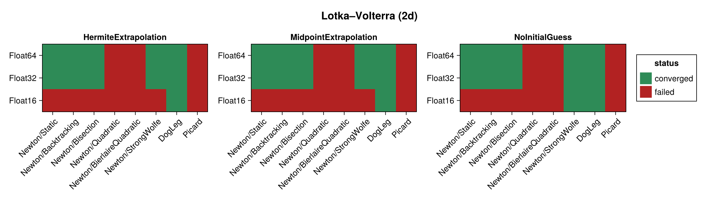
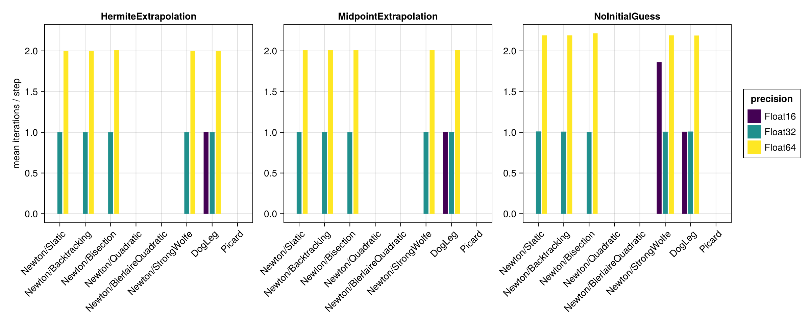
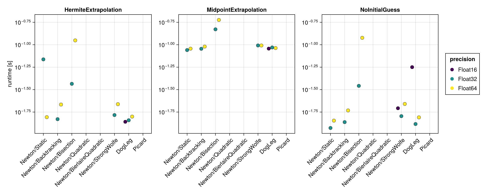
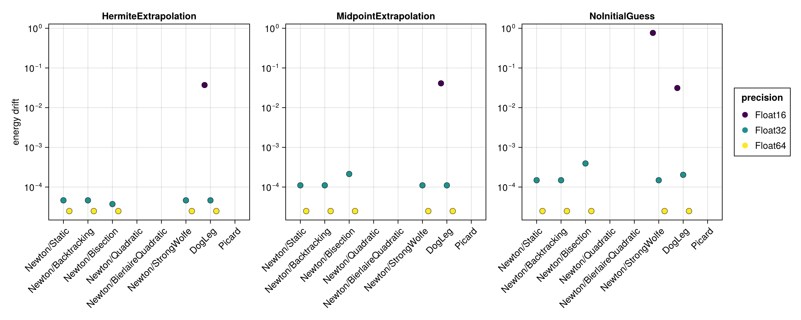

Lotka–Volterra (2d)
The 2d Lotka–Volterra system is a non-canonical Hamiltonian system, benchmarked here in its implicit form via iodeproblem (an implicit ODE / degenerate Lagrangian). Its Hamiltonian $H = a_1 q_1 + a_2 q_2 + b_1 \log q_1 + b_2 \log q_2$ depends on the positions $q$ alone and is used for the energy-drift metric. The system is stiffer than the oscillator and pendulum, so the native time span $(0, 10)$ with $\Delta t = 0.01$ is used instead of the coarse $\Delta t = 0.1$.
The benchmark below is regenerated at documentation build time with a single, fast timing pass. See the driver script scripts/lotka_volterra_2d.jl for accurate BenchmarkTools measurements.
using SolverBenchmark
spec = lotka_volterra_2d_spec()
df = run_benchmark(spec; timing = :quick, verbose = false, quiet = true)Convergence
plot_convergence(df; title = "Lotka–Volterra (2d)")
Nonlinear iterations
Mean number of nonlinear-solver iterations per time step (converged runs only):
plot_iterations(df)
Run time
plot_runtime(df)
Energy drift
Drift of the conserved Hamiltonian:
plot_energy_drift(df)
Discussion
- Being an implicit, non-canonical system, the implicit midpoint equations are genuinely nonlinear:
Newton(with a robust line search) andDogLegconverge in about 2 iterations per step atFloat32/Float64. Picardnever converges on this system — unlike the harmonic oscillator and pendulum (where it converged, if slowly), the fixed-point iteration diverges on the non-canonicaliodeproblemformulation. TheQuadraticandBierlaireQuadraticline searches also fail throughout.Float16largely fails (only a handful of runs converge): the Newton linear solve hits singular Jacobians and the trajectory diverges.Float32andFloat64behave essentially identically here — the achievable step accuracy is already reached atFloat32.- As always the initial guess matters only for the solvers that iterate more; for the one- to two-iteration Newton/DogLeg runs it has little effect.
Results table
markdown_table(summary_table(df))| precision | solver_label | initial_guess | converged | iterations_mean | runtime_s | max_residual | energy_drift |
|---|---|---|---|---|---|---|---|
| Float16 | Newton/Static | HermiteExtrapolation | ✗ | 2.52 | 0.0118 | NaN | — |
| Float16 | Newton/Static | MidpointExtrapolation | ✗ | — | — | — | — |
| Float16 | Newton/Static | NoInitialGuess | ✗ | — | — | — | — |
| Float16 | Newton/Backtracking | HermiteExtrapolation | ✗ | — | — | — | — |
| Float16 | Newton/Backtracking | MidpointExtrapolation | ✗ | — | — | — | — |
| Float16 | Newton/Backtracking | NoInitialGuess | ✗ | — | — | — | — |
| Float16 | Newton/Bisection | HermiteExtrapolation | ✗ | 175 | 4.85 | 0.00929 | — |
| Float16 | Newton/Bisection | MidpointExtrapolation | ✗ | 166 | 4.75 | 0.011 | — |
| Float16 | Newton/Bisection | NoInitialGuess | ✗ | 277 | 8.32 | 0.00981 | — |
| Float16 | Newton/Quadratic | HermiteExtrapolation | ✗ | — | — | — | — |
| Float16 | Newton/Quadratic | MidpointExtrapolation | ✗ | — | — | — | — |
| Float16 | Newton/Quadratic | NoInitialGuess | ✗ | — | — | — | — |
| Float16 | Newton/BierlaireQuadratic | HermiteExtrapolation | ✗ | 41 | 0.163 | 0.0168 | — |
| Float16 | Newton/BierlaireQuadratic | MidpointExtrapolation | ✗ | 47 | 0.262 | 0.0164 | — |
| Float16 | Newton/BierlaireQuadratic | NoInitialGuess | ✗ | 276 | 0.353 | 0.0294 | — |
| Float16 | Newton/StrongWolfe | HermiteExtrapolation | ✗ | — | — | — | — |
| Float16 | Newton/StrongWolfe | MidpointExtrapolation | ✗ | — | — | — | — |
| Float16 | Newton/StrongWolfe | NoInitialGuess | ✓ | 1.86 | 0.0196 | 0.00781 | 0.764 |
| Float16 | DogLeg | HermiteExtrapolation | ✓ | 1 | 0.0139 | 0.00766 | 0.0371 |
| Float16 | DogLeg | MidpointExtrapolation | ✓ | 1 | 0.0905 | 0.00667 | 0.041 |
| Float16 | DogLeg | NoInitialGuess | ✓ | 1.01 | 0.0563 | 0.00684 | 0.0312 |
| Float16 | Picard | HermiteExtrapolation | ✗ | 792 | 2.63 | 0.0797 | — |
| Float16 | Picard | MidpointExtrapolation | ✗ | 882 | 3.06 | 0.0552 | — |
| Float16 | Picard | NoInitialGuess | ✗ | 974 | 3.11 | 0.135 | — |
| Float32 | Newton/Static | HermiteExtrapolation | ✓ | 1 | 0.0687 | 9.5e-07 | 4.63e-05 |
| Float32 | Newton/Static | MidpointExtrapolation | ✓ | 1 | 0.0872 | 9.34e-07 | 0.00011 |
| Float32 | Newton/Static | NoInitialGuess | ✓ | 1.01 | 0.0118 | 9.44e-07 | 0.000149 |
| Float32 | Newton/Backtracking | HermiteExtrapolation | ✓ | 1 | 0.0148 | 9.5e-07 | 4.63e-05 |
| Float32 | Newton/Backtracking | MidpointExtrapolation | ✓ | 1 | 0.0901 | 9.34e-07 | 0.00011 |
| Float32 | Newton/Backtracking | NoInitialGuess | ✓ | 1.01 | 0.0137 | 9.44e-07 | 0.000149 |
| Float32 | Newton/Bisection | HermiteExtrapolation | ✓ | 1 | 0.0367 | 9.04e-07 | 3.72e-05 |
| Float32 | Newton/Bisection | MidpointExtrapolation | ✓ | 1 | 0.149 | 9.1e-07 | 0.000213 |
| Float32 | Newton/Bisection | NoInitialGuess | ✓ | 1 | 0.0348 | 8.65e-07 | 0.000393 |
| Float32 | Newton/Quadratic | HermiteExtrapolation | ✗ | 407 | 2.39 | 4.03e-05 | — |
| Float32 | Newton/Quadratic | MidpointExtrapolation | ✗ | 394 | 2.6 | 9.13e-05 | — |
| Float32 | Newton/Quadratic | NoInitialGuess | ✗ | 366 | 3.44 | 0.000686 | — |
| Float32 | Newton/BierlaireQuadratic | HermiteExtrapolation | ✗ | 415 | 1.55 | 0.00069 | — |
| Float32 | Newton/BierlaireQuadratic | MidpointExtrapolation | ✗ | 502 | 1.99 | 0.000146 | — |
| Float32 | Newton/BierlaireQuadratic | NoInitialGuess | ✗ | 193 | 0.82 | 0.000679 | — |
| Float32 | Newton/StrongWolfe | HermiteExtrapolation | ✓ | 1 | 0.0165 | 9.5e-07 | 4.63e-05 |
| Float32 | Newton/StrongWolfe | MidpointExtrapolation | ✓ | 1 | 0.0982 | 9.34e-07 | 0.00011 |
| Float32 | Newton/StrongWolfe | NoInitialGuess | ✓ | 1.01 | 0.016 | 9.44e-07 | 0.000149 |
| Float32 | DogLeg | HermiteExtrapolation | ✓ | 1 | 0.0144 | 9.5e-07 | 4.63e-05 |
| Float32 | DogLeg | MidpointExtrapolation | ✓ | 1 | 0.0933 | 9.34e-07 | 0.00011 |
| Float32 | DogLeg | NoInitialGuess | ✓ | 1.01 | 0.0131 | 8.48e-07 | 0.000203 |
| Float32 | Picard | HermiteExtrapolation | ✗ | 1e+03 | 5.09 | 0.000566 | — |
| Float32 | Picard | MidpointExtrapolation | ✗ | 1e+03 | 5.14 | 0.000524 | — |
| Float32 | Picard | NoInitialGuess | ✗ | 1e+03 | 6.94 | 0.918 | — |
| Float64 | Newton/Static | HermiteExtrapolation | ✓ | 2 | 0.0156 | 1.69e-15 | 2.48e-05 |
| Float64 | Newton/Static | MidpointExtrapolation | ✓ | 2.01 | 0.0904 | 1.7e-15 | 2.48e-05 |
| Float64 | Newton/Static | NoInitialGuess | ✓ | 2.19 | 0.0143 | 1.78e-15 | 2.48e-05 |
| Float64 | Newton/Backtracking | HermiteExtrapolation | ✓ | 2 | 0.0216 | 1.69e-15 | 2.48e-05 |
| Float64 | Newton/Backtracking | MidpointExtrapolation | ✓ | 2.01 | 0.0953 | 1.7e-15 | 2.48e-05 |
| Float64 | Newton/Backtracking | NoInitialGuess | ✓ | 2.19 | 0.0185 | 1.78e-15 | 2.48e-05 |
| Float64 | Newton/Bisection | HermiteExtrapolation | ✓ | 2.01 | 0.112 | 1.75e-15 | 2.48e-05 |
| Float64 | Newton/Bisection | MidpointExtrapolation | ✓ | 2.01 | 0.189 | 1.77e-15 | 2.48e-05 |
| Float64 | Newton/Bisection | NoInitialGuess | ✓ | 2.22 | 0.119 | 1.75e-15 | 2.48e-05 |
| Float64 | Newton/Quadratic | HermiteExtrapolation | ✗ | 569 | 4.15 | 1.82e-10 | — |
| Float64 | Newton/Quadratic | MidpointExtrapolation | ✗ | 582 | 4.26 | 1.85e-10 | — |
| Float64 | Newton/Quadratic | NoInitialGuess | ✗ | 699 | 5.09 | 1.58e-08 | — |
| Float64 | Newton/BierlaireQuadratic | HermiteExtrapolation | ✗ | — | — | — | — |
| Float64 | Newton/BierlaireQuadratic | MidpointExtrapolation | ✗ | — | — | — | — |
| Float64 | Newton/BierlaireQuadratic | NoInitialGuess | ✗ | — | — | — | — |
| Float64 | Newton/StrongWolfe | HermiteExtrapolation | ✓ | 2 | 0.0218 | 1.69e-15 | 2.48e-05 |
| Float64 | Newton/StrongWolfe | MidpointExtrapolation | ✓ | 2.01 | 0.0981 | 1.7e-15 | 2.48e-05 |
| Float64 | Newton/StrongWolfe | NoInitialGuess | ✓ | 2.19 | 0.0219 | 1.78e-15 | 2.48e-05 |
| Float64 | DogLeg | HermiteExtrapolation | ✓ | 2 | 0.0158 | 1.69e-15 | 2.48e-05 |
| Float64 | DogLeg | MidpointExtrapolation | ✓ | 2.01 | 0.0919 | 1.7e-15 | 2.48e-05 |
| Float64 | DogLeg | NoInitialGuess | ✓ | 2.19 | 0.0155 | 1.73e-15 | 2.48e-05 |
| Float64 | Picard | HermiteExtrapolation | ✗ | 1e+03 | 13.5 | 0.00548 | — |
| Float64 | Picard | MidpointExtrapolation | ✗ | 1e+03 | 14.3 | 0.0198 | — |
| Float64 | Picard | NoInitialGuess | ✗ | — | — | — | — |